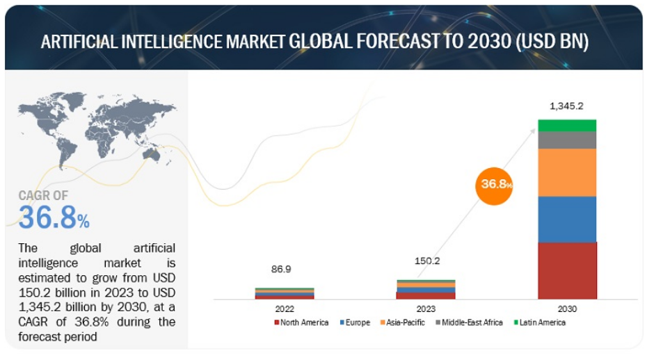

La inteligencia artifial generativa (IAG) es una rama de la inteligancia artificial que se centra en crear imegenes, conversaciones, contenidos nuevos, etc.
El origen de la inteligencia artificial generativa (IAG) se remonta a la necesidad de simular los procesos de pensamiento humano. Originalmente,
la IAG surgió con el propósito de imitar la inteligencia humana en tareas informáticas no tradicionales, como el reconocimiento de imágenes, el
procesamiento de lenguaje natural (NLP) y la traducción.
La inversión en IAG ha aumentado significativamente a principios de la década de 2020, con grandes empresas como Microsoft, Google y Baidu, así
como numerosas empresas más pequeñas, desarrollando modelos de IA generativa. Esto ha llevado a un crecimiento en la capacidad de la IA para generar contenido
nuevo y creativo, utilizando grandes cantidades de datos para aprender y luego aplicar ese aprendizaje para crear nuevas ideas y contenidos
Funcionamiento
La IA generativa funciona mediante redes neuronales artificiales que imitan
la forma en que se cree que funciona el cerebro humano. Estas redes neuronales
se entrenan introduciendo grandes cantidades de datos y luego pidiendo a la IA que realice predicciones simples, como la siguiente palabra de una secuencia o el
orden correcto de una serie de oraciones. La red neuronal recibe retroalimentación positiva o negativa por cada respuesta correcta o incorrecta, p
or lo que aprende del proceso hasta que es capaz de pronosticar con éxito.
Impacto social
La inteligencia artificial generativa tiene muchos beneficios entre ellos:
La creacion de contenido nuevo en el area del arte
Contenido publicitario en el area de marketing, lo que ayuda a las empresas
Aplicación en la investigación científica y en la medicina para analizar grandes cantidades de datos.
Pero tambien la inteligencia artifial generativa presenta algunos riesgos o limitaciones entre ellas :
La IAG puede llegar acrear contenido sesgado
El riesgo de la privacidad con la IA, ya que puede existir el uso de datos personales de manera indevida
El uso de propiedad intelectual
LA gran cantidad de contenido que crea puede llegar a ser dañino
Situacion actual
La inteligencia artificial generativa, en el año 2023 ha desempeñado un un papel cada dia mas importante por lo ha
tenido un impacto mas significativo en la industria. Y esta a su vez a tenido avancez muy destacados en entres ellos se encuentra:
Innovaciones en generación de imágenes
Evolución en la generación de video
Progresos en la generación de texto
Algunas alianzas estratégicas
Vision a futuro
La inteligencia artificial (IA) generativa se encuentra en el epicentro de una revolución tecnológica, prometiendo una transformación
profunda en múltiples áreas y aspectos de nuestra vida diaria.A medida que progresamos, diversas tendencias emergentes en este ámbito están trazando un futuro
emocionante y desafiante. Exploremos algunas de las tendencias más relevantes que podrían moldear el panorama de la IA generativa en los próximos años.
Apple y su incursión estratégica en la IA
Futuro de OpenAI: Una fase más agresiva
Desafíos legales y regulatorios en la IA
La Importancia creciente de la calidad de los datos
Avances en la terminología de IA
Microsoft y OpenAI: Una alianza Incierta
Aqui podemos ver una imagen del uso de la inteligencia artifical dentro del mercado global
